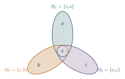

Give a careful argument to show that, if \(G_1\) and \(G_2\) are subgroups of a finite group \(G\) such that every element of \(G\) is either in \(G_1\) or in \(G_2\), then either \(G_1 = G\) or \(G_2 = G\).
Give an example of a group \(H\) which has three subgroups \(H_1\), \(H_2\) and \(H_3\) such that every element of \(H\) is either in \(H_1\), \(H_2\) or \(H_3\) and \(H_1 \neq H\), \(H_2 \neq H\), \(H_3 \neq H\).
The hook
This is one of the shortest questions in the book, and one of the most characteristic of university mathematics. It is about groups, the mathematical language of symmetry, and it asks something that sounds like a puzzle: can a group be covered by two smaller groups sitting inside it? The answer is no, and the proof is three lines long. But three smaller groups can do it, which is a surprise.
Group theory was on the STEP syllabus until 2019 and is now a staple of the first year at university. This question needs only the definitions, which are given below, and it is a perfect first taste of how group theorists think: a short, clever argument that uses nothing but the axioms.
Before you start
A group is a set \(G\) with an operation (written as multiplication, \(ab\)) such that:
the operation is associative: \((ab)c = a(bc)\);
there is an identity element \(e\) with \(ea = ae = a\) for every \(a\);
every \(a\) has an inverse \(a^{-1}\) with \(aa^{-1} = a^{-1}a = e\).
Examples: the whole numbers under addition; the non-zero real numbers under multiplication; the rotations of a square under composition. A subgroup is a subset \(K\) of \(G\) that is a group in its own right under the same operation: it contains \(e\), and if \(a, b \in K\) then \(ab \in K\) and \(a^{-1} \in K\).
If \(K\) is a subgroup and \(a \in K\), but \(b \notin K\), can \(ab\) be in \(K\)?
No. If \(ab \in K\), then \(b = a^{-1}(ab)\) would be a product of two elements of \(K\), and so in \(K\). This tiny observation is the whole proof.
Working it through
Stage 1 Two subgroups cannot cover
Suppose, for a contradiction, that \(G = G_1 \cup G_2\) but neither \(G_1\) nor \(G_2\) is all of \(G\).
Since \(G_1 \neq G\), there is an element not in \(G_1\). Where must it be? Similarly for \(G_2\). Now multiply the two elements together.
Choose \(a \in G\) with \(a \notin G_1\); since every element is in \(G_1\) or \(G_2\), \(a \in G_2\). Choose \(b \in G\) with \(b \notin G_2\); then \(b \in G_1\). Consider the product \(ab\). It lies in \(G_1\) or in \(G_2\).
If \(ab \in G_1\): since \(b \in G_1\), \(a = (ab)b^{-1} \in G_1\). Contradiction.
If \(ab \in G_2\): since \(a \in G_2\), \(b = a^{-1}(ab) \in G_2\). Contradiction.
Either way we reach a contradiction, so \(G_1 = G\) or \(G_2 = G\).■
Notice that we never used the fact that \(G\) is finite. The result holds for every group.
Stage 2 Three subgroups can
Find a group that is the union of three subgroups, none of them the whole group. (Hint: try a small group in which every element is its own inverse.)
Take the Klein four-group \(V = \{e, a, b, c\}\), with the rules \(a^2 = b^2 = c^2 = e\) and \(ab = ba = c\), \(bc = cb = a\), \(ca = ac = b\). (Concretely: the four symmetries of a non-square rectangle, namely doing nothing, rotating by \(180^\circ\), and reflecting in either axis. Or the pairs \((x, y)\) of bits \(0\), \(1\) under addition modulo \(2\).) Its three subgroups \[H_1 = \{e, a\}, \qquad H_2 = \{e, b\}, \qquad H_3 = \{e, c\}\] each have two elements, none is the whole group, and together they contain every element of \(V\) (Figure 6.6.1).■

Looking back
Pick witnesses and combine them. The proof chose an element outside each subgroup and multiplied them. This “take one from each and combine” move is extremely common in algebra.
Closure is powerful. The only property of subgroups used was that they are closed under multiplication and inverses.
Check the hypotheses you need. Finiteness was given but not used. Noticing that a hypothesis is unnecessary is part of understanding a proof.
What’s really going on
Groups arose in the nineteenth century from several directions at once: Galois’s study of permutations of the roots of polynomials (Section 6.4), Cauchy’s work on permutations, and the study of symmetries in geometry and crystallography. The abstract definition above, in which a group is anything satisfying the three axioms, was settled by the end of the century. Its power is generality: a theorem proved from the axioms, like the one in this question, holds simultaneously for groups of numbers, of matrices, of symmetries and of permutations. Today groups are everywhere: in particle physics (the standard model is built on symmetry groups), in chemistry (molecular symmetry determines spectra), in cryptography (elliptic curve groups, Section 1.9) and in the solution of Rubik’s cube.
How many subgroups does it take?
The question suggests a natural problem: what is the smallest number of proper subgroups whose union is the whole group? It is never \(2\), by the question. In 1926 Gaetano Scorza showed that a group is the union of three proper subgroups exactly when it has the Klein four-group as a “quotient”. In 1994 J. H. E. Cohn studied the general problem and conjectured several results, and in 1997 M. J. Tomkinson proved that there is no group for which this smallest number is seven, although every number from \(3\) to \(6\) occurs. Questions like this, simple to state and surprisingly subtle, are typical of group theory.
Vector spaces
A similar argument shows that a vector space over the real numbers (such as the plane, or three-dimensional space) can never be the union of finitely many proper subspaces: a plane is not the union of finitely many lines through the origin. But over a finite field it can be: the plane over the field with two elements, which is just the Klein four-group again, is the union of its three lines.
The thinking skill
In abstract algebra, you often know nothing about the objects except the axioms they satisfy. The proof must use only those axioms.
This forces arguments to be short and clean, like the one here, and it makes them universally applicable. It takes some getting used to, and it is one of the most distinctive experiences of a first-year algebra course.
Try this next
Check the group. Write out the multiplication table of the Klein four-group and check the group axioms. Show that it is not the same as the group \(\{1, \mathrm{i}, -1, -\mathrm{i}\}\) under multiplication. (Hint: which elements are their own inverses?)
Cyclic groups. A group is cyclic if every element is a power of a single element \(g\). Show that a cyclic group is never the union of proper subgroups, however many. (Hint: which subgroup contains \(g\)?)
The whole numbers. Show directly that \((\mathbb{Z}, +)\) is not the union of the subgroups \(2\mathbb{Z}\) (even numbers) and \(3\mathbb{Z}\) (multiples of \(3\)). Is it the union of any two proper subgroups?
Lines in the plane. harder Show that the plane \(\mathbb{R}^2\) is not the union of finitely many lines through the origin. (Hint: each line contains at most one point of the parabola \(y = x^2\) other than the origin.)
Further reading
M. A. Armstrong, Groups and Symmetry (Springer). A beautifully illustrated first course, driven by geometric examples.
Nathan Carter, Visual Group Theory (Mathematical Association of America). Groups through pictures, ideal before university.
Peter Neumann, Gabrielle Stoy & Edward Thompson, Groups and Geometry (Oxford University Press). A classic Oxford first-year text.